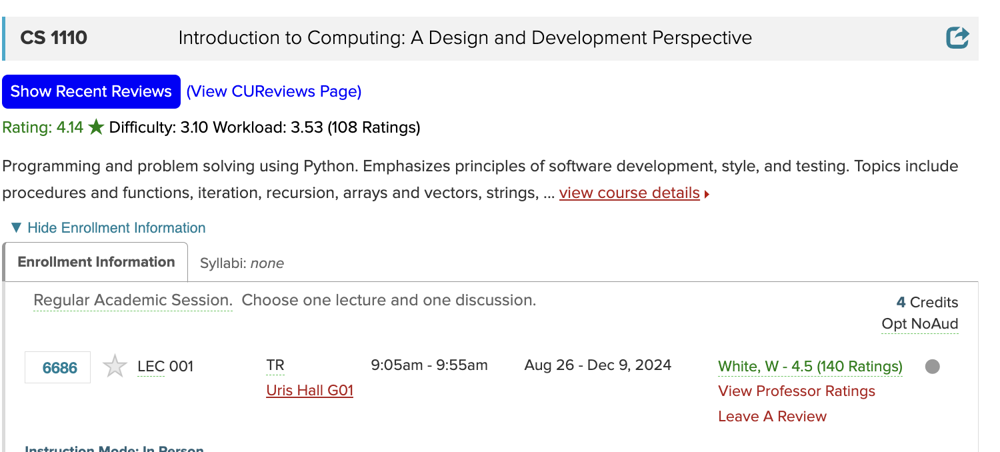

c
How I Helped Cornell Students Avoid Bad Grades
January 24, 2025
An overview of ProfessorPeek
## Problem
There's nothing worse than taking a class with a professor that's boring, a tough grader, and offers no support. Let's call this type of Professor a Type X professor. Another type of professor is Type Y, they understand students, have reasonable grading criteria, and actively try to make lectures engaging by focusing on teaching quality.
In these two classes, you will walk away with different amounts of knowledge and more importantly to some people, a different grade.
## Solution
To help Cornell students take classes with better professors, I built [ProfessorPeek](https://chromewebstore.google.com/detail/professor-peek/jilfmfcpampggogoeppklpbkkejnoglo?pli=1). A chrome extension that shows students information about a class and it's professors while they're browsing on course roster.
After a student downloads the chrome extension and navigates to Cornell's course roster, my extension starts grabbing the courses and professor names for each entry on the site. Once the data is loaded in, students now see the following:

- Average rating, difficulty, and workload of the class alongside the sample size
- Average professor rating and the same size
- Links to view the class and professor reviews more in depth
- A link to leave a review for a professor
- A button to the two most recent reviews of a class
## Implementation
Once a user goes to a class roster link, my extension activates and scrapes all the professor and class names on the page which leads to a series of API requests:
- With a professor's name, I query RateMyProfessor for an exact match of name. If there's a match, my API returns the number of reviews ,page link, and average professor rating
- With the class name, I use a website made by [Cornell Digital Tech & Innovation Project Team](https://www.cornelldti.org/)called CUReviews. The site has a public API and I query for the class subject and number which gives me the average overall rating, difficulty, and workload out of 5 alongside the sample size.
All of the requests and data processing are done by my Flask API hosted on render. To edit the page contents, I initially used vanilla JS and updated the DOM directly. For the second iteration, I started using [Plasmo](https://docs.plasmo.com/) which enabled me to use React for components and styling.
Other features of the extension are:
- Clicking on a professor's name copies it to your clipboard if you want to do further searching
- Collapsing class sections so it's easier and faster to scroll through a collection of classes
- Filtering classes and sections by time of day
- Quick access menu with links to other helpful tools and Cornell information
## Impact
Once I released the extension, the overall reception was [positive](https://x.com/ronaldjabouin/status/1786896250056368437). I didn't instantly get the entire Cornell population using the extension overnight but, the extension cuurently has 305 installs which I think is great for a project initially built in a weekend.
## Pitfalls
- Some professors have a different administrative name than their nickname. For example, there's a professor whose full name is Stephen Marschner but, he goes by Steve Marschner. When I search RateMyProfessor for Stephen Marschner, there are no results. I could default to picking the most similar name but, that creates a separate issue where two professors have similar names, one doesn't have a score yet, and I show the information for the wrong professor.
- Every class and every professor won't have data. As a CS student, most of the popular classes and long standing professors have reviews. However, for other majors, this may not be the case so it may be more difficult to learn about a class you're interested in.
## Check It Out
You can download the extension on the [Chrome Web Store](https://chromewebstore.google.com/detail/professor-peek/jilfmfcpampggogoeppklpbkkejnoglo?pli=1) and view the source code on [Github](https://github.com/ronjj/ProfessorPeek)